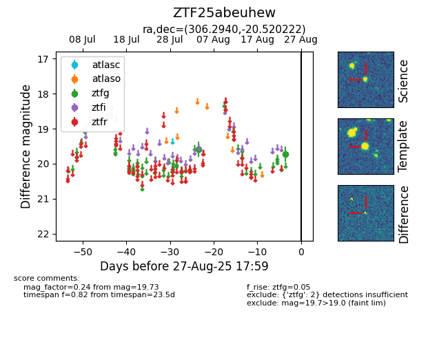

Target ZTF25abeuhew at 2025-08-27 17:59, see:
FINK: fink-portal.org/ZTF25abeuhew
Lasair: lasair-ztf.lsst.ac.uk/objects/ZTF25abeuhew
ALeRCE: alerce.online/object/ZTF25abeuhew
alt names
ZTF25abeuhew (ztf,fink)
coordinates:
equatorial (ra, dec) = (306.2940,-20.52022)
galactic (l, b) = (23.5397,-29.42807)
photometry
last ztfg=19.73
2 ztfg detections
